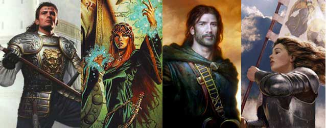
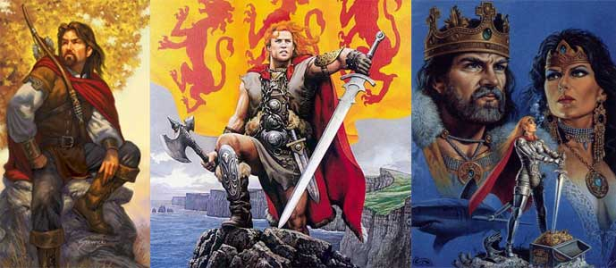

|
PUNTEGGI MINIMI E MASSIMI RAZZIALI PER LE ABILITÀ |
||
| ABILITÀ | MINIMO | MASSIMO |
| Forza | 3 | 18 |
| Intelligenza | 6 | 18 |
| Saggezza | 6 | 18 |
| Costituzione | 4 | 18 |
| Carisma | 3 | 18 |
| Destrezza | 3 | 18 |
|
ABILITÀ DEI LADRI |
PUNTEGGIO INIZIALE |
| Pick Pocket | 15 % |
| Open Lock | 10 % |
| Find/Rem. Trap | 8 % |
| Move Silently | 10 % |
| Hide in Shadows | 2 % |
| Detect Noise | 15 % |
| Climb Wall | 60 % |
| Read Languages | 3 % |
| FATTORE MOVIMENTO BASE | 8 esagoni |
| SENTIRE RUMORI | 15 % |
|
DIMENSIONI E PESO |
SISTEMA DI CALCOLO DELL'ALTEZZA E DEL PESO |
| Altezza del maschio | 134 cm. + 3 cm. per punto di costituzione + 2d10 cm. |
| Altezza della femmina | 120 cm. + 3 cm. per punto di costituzione + 2d10 cm. |
| Peso del maschio | 60 kg. + 2 kg. per punto di costituzione + 1d6 kg. |
| Peso della femmina | 50 kg. + 2 kg. per punto di costituzione + 1d6 kg. |
|
CATEGORIA DI ETÀ |
ANNI |
| Starting Age | 15 + 1d4 |
| Childhood | 0 - 15 |
| Adolescence | 16 - 29 |
| Adulthood | 30 - 44 |
| Middle Age* | 45 - 59 |
| Old Age** | 60 - 89 |
| Venerable Age*** | 90 + |
| Maximum Age | 90 + 2d20 |
* Middle Age: I
personaggi di questa categoria di età perdono 1 punto di forza ed 1 punto di
costituzione, acquisiscono però 1 punto di intelligenza ed 1 punto di saggezza
(non potendo, in ogni caso, superare i massimi razziali).
** Old Age: I personaggi di questa categoria di età perdono 2 punti di
destrezza, 2 ulteriori punti di forza ed 1 ulteriore punto di costituzione,
acquisiscono però 1 ulteriore punto di saggezza (non potendo, in ogni caso,
superare i massimi razziali).
*** Venerable Age: I personaggi di questa categoria di età perdono 1
ulteriore punto di destrezza, di forza e di costituzione, acquisiscono però 1
ulteriore punto di intelligenza e di saggezza (non potendo, in ogni caso,
superare i massimi razziali).


| NOME | Propensione alla Conoscenza |
| COSTO IN PUNTI CREAZIONE | 1 |
| REQUISITO PARTICOLARE | NESSUNO |
| DESCRIZIONE |
Gli Areliani hanno maggiore propensione all'istruzione ed alla conoscenza per tale motivo costoro possono partire in sede di creazione del personaggio con 250 punti competenze supplementari qualora scelgano questo talento razziale. Questo talento razziale può essere scelto un'unica volta. |
| NOME | Inclinazione alla Devozione |
| COSTO IN PUNTI CREAZIONE | 2 |
| REQUISITO PARTICOLARE | NESSUNO |
| DESCRIZIONE |
Alcuni Areliani
hanno una particolare inclinazione alla devozione ed alla cura dei culti
divini. Costoro ricevono i seguenti benefici: |
| NOME | Propensione alla Ricerca |
| COSTO IN PUNTI CREAZIONE | 2 |
| REQUISITO PARTICOLARE | PUNTEGGIO IN INTELLIGENZA ALMENO PARI A 12 |
| DESCRIZIONE |
Gli Areliani sono la
razza di umani con la mente maggiormente rivolta al pluralismo, alla
scoperta ed alle nuove conoscenze. In particolare, alcuni Areliani
risultano particolarmente bravi nella ricerca e nell'approfondire le
proprie conoscenze: |
| NOME | Superiore Abilità Tattica |
| COSTO IN PUNTI CREAZIONE | 2 |
| REQUISITO PARTICOLARE | PUNTEGGIO IN INTELLIGENZA ALMENO PARI A 12 |
| DESCRIZIONE |
Alcuni Areliani
hanno una particolare capacità tattica in grado di renderli attenti ed
affidabili combattenti. Costoro ricevono i seguenti benefici: |
| NOME | Propensione alle Cure |
| COSTO IN PUNTI CREAZIONE | 2 |
| REQUISITO PARTICOLARE | ALLINEAMENTO BUONO (GOOD) |
| DESCRIZIONE |
Alcuni Areliani hanno
maggiore propensione a curare le altre creature e sono in grado di
sprigionare maggiore energia positiva con le proprie mani. Per tale
motivo, costoro ricevono i seguenti benefici: |
| NOME | Versatilità Mentale |
| COSTO IN PUNTI CREAZIONE | 3 |
| REQUISITO PARTICOLARE | PUNTEGGIO IN INTELLIGENZA ALMENO PARI A 12 |
| DESCRIZIONE |
Gli Areliani sono la
razza di umani con la mente maggiormente rivolta al pluralismo alla
scoperta ed alle nuove conoscenze. In particolare, alcuni Areliani
risultano particolarmente versatili nell'acquisizione di una pluralità
di conoscenze. Per tale motivo, costoro ricevono i seguenti benefici: |